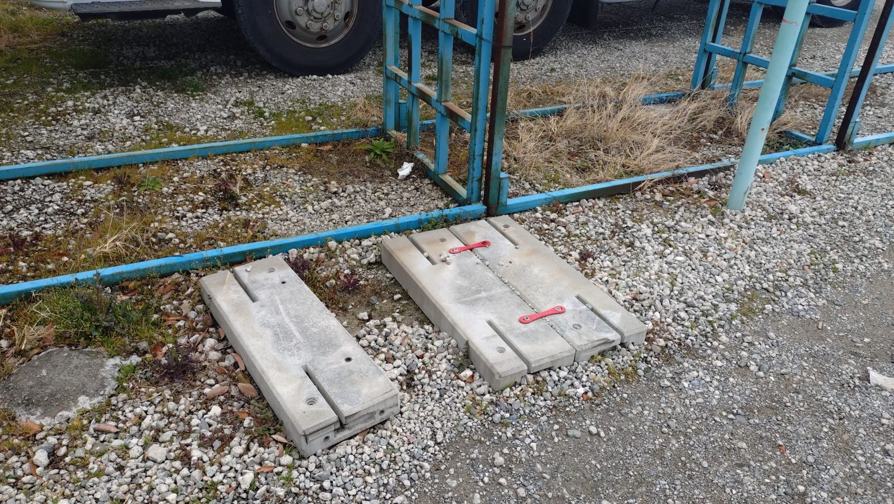

水や缶コーヒーが格安の80円で売っていた自販機が消えていた。
小遣いも少ないし登下校路上にあったから中学生の自分にとってはいい自販機だった。
まぁあんま頻繁には使わなかったが。
ちなみにこの自販機を所有してるであろう会社は富士山の天然水なるものを販売している。
だから自販機にも富士山の天然水があった。
なくなった理由
これだけなのもつまらないだろう。
なのでここらからはなくなった理由を考察していこう。
理由として考えれるのはこれぐらいだ。
利益がなかった
まず一つ目の理由。一番ありえそうな理由だ。こう考えるのは、80円という破格の値段の割にだれもこの自販機を使っていなかったからだ。
あんまり見ていたわけではない。だが今考えるとたまに前を通ることがあるのだが、誰も使っている気配はなかった。
利益がなければずっと自販機を出している理由はないだろう。一般的に赤字を垂れ流すものは切り捨てるだろう。
ちなみにこの自販機を所有してるであろう会社は利益が140億円程度あるそうだ。
誰も利用しなかった
これはあんまなさそうだ。
先述の通り誰も使っていなかった。その自販機はとある会社(以下S株式会社)の敷地内にあった。
S株式会社が需要がないと思って撤去してしまったのかもしれない。
何らかの理由で自販機を出している理由がなくなった
何らかの理由ってなんなんだ。
そう考える理由はその自販機を置いてるのはタンクローリーが多く止まっている場所だったから。
調べてみるとS株式会社は灯油の巡回販売や富士山の天然水の販売などをしている会社だ。
前述のとおりS株式会社の敷地内にあったので自販機はS株式会社の所有物だろう。
S株式会社は灯油販売などで利益を出しているから、何らかの理由で自販機を出している理由がなくなって撤去したのかもしれない。利益があっても何らかの理由で撤去したのかもしれない。
まとめ
まとめって言っても何も思いつかない。